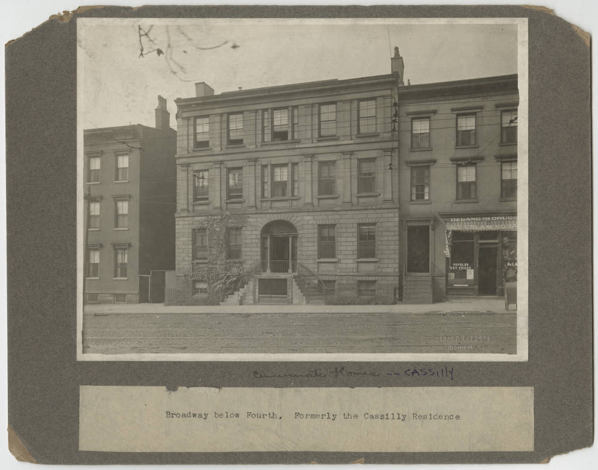
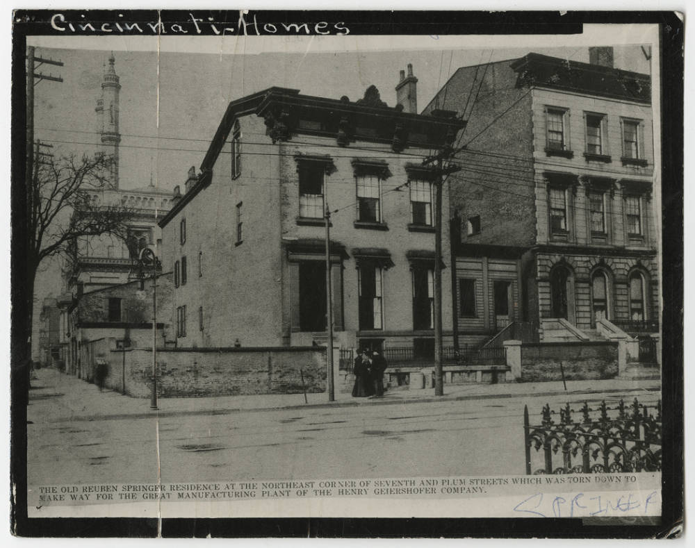

Lost Cincinnati
All these images come from the Cincinnati Public Library


119 broadway / Ca 1920~
This was originally the home of M.P. Cassilly in the 1860s and then turned into a boarding house. It and other properties were purchased in 1922 by the Queen City Club for its new and present home.


234 W. Seventh Street, Cincinnati, Ohio / Ca 1900
This was the home of philanthropist Reuben R. Springer, who largely funded the building of Music Hall. As the caption indicates, it later was demolished to allow for the construction of the manufacturing building for the Henry Geiershofer Clothing Company in 1905. It is now the site of a parking garage.